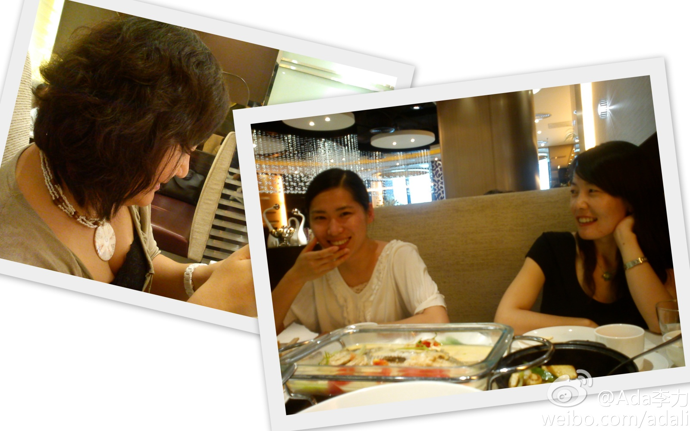

TW是个很特别的环境。适应了这里，不容易适应别的地方。@聂子的微博:发表了博文 《工作中要不要做淑女》 - 前几天和同事一起吃饭，聊起一个话题，关于公司里的女同事。 大家普遍认为，在TW，无论什么角色，温柔温顺的女性是混不下去的，而事实也证明或者在不断证明此结论的正确 网页链接
人多的地方不要去。清冷的时候更要坚持。@李驰:发表了博文 《暴雨中冷清的平安股东大会》 - 连续两年参加平安股东大会，一年比一年人少。今年又恰逢深圳暴雨，为短短一个多小时结束的股东大会更蒙上了一层清冷。 少了些许霸气的老马答股东问的最后一句 网页链接
你给了强势很好的一个定义哈. //@神马猎人:“强势”一词被使用的几率非常高，现实的体验是，它并不代表西风压倒东风的壮烈或者东风压倒西风的结局，而是谈判过程里的一种充分沟通，思维碰撞里的透彻交流。我一直觉得这是公司最有价值的文化之一，每个人追求的不是世界大同，而是挑战与被挑战带来的收获和@聂子的微博:发表了博文 《工作中要不要做淑女》 - 前几天和同事一起吃饭，聊起一个话题，关于公司里的女同事。 大家普遍认为，在TW，无论什么角色，温柔温顺的女性是混不下去的，而事实也证明或者在不断证明此结论的正确 网页链接
帮转, #北京创业周末#2011年6月24日---26日在三里屯瑜舍酒店举行.网页链接 . 这个活动和#iWeekend#很像. 去年10月份, 两个组织在同一个周末作活动, 不过一个在桔子酒店, 一个在法国Orange电信公司, 地点的名字上有巧合. 很有趣. @AndyMok2010
华为和开源社区拉上关系, 还是让人有些惊讶. 之前Sun有两个VP级别的人去了华为, Synyaw Wang和James Hughes. 星耀只在华为呆了几个月, 文化差异太大.@程开源:华为软件招开源社区运营的人，有人应征么 ? @huihoo @shlug @python4cn @ralasafe @开源中国 @王开源 @程勇-PeterCheng @Ada李力
恩，如果有这类人大量存在，说明有市场需求在。这些人的价值，可能是只写代码的人看不到的。@放翁_文初:牛叉啊，昨天给了一个面试的候选人，谈了5分钟就真的忍不住，不过出于礼貌再寒暄了一下，一架构师，不写代码，主要负责协调和概要设计及写专利，问了一下所做的专利技术方面的内容，给出了bea，sun,eclipse的三个产品介绍，就直接拒了，今天听闻，被另一个子公司找去做7了，笑而不语
今天和@比兔子乖 @聂子的微博 @CSDN炫姐姐 一起聊了女性社区的事情。国外有不少针对从事IT行业女性成长和分享的组织，看看是不是在中国也可以做个类似公益性质的社区。Shining已经给起了个很好的名字，效珅会从ThoughtWorks拿些资源，我属于热心参合的，这事儿挺好的。[呵呵] 


 网页链接 . 这个活动和#iWeekend#很像. 去年10月份, 两个组织在同一个周末作活动, 不过一个在桔子酒店, 一个在法国Orange电信公司, 地点的名字上有巧合. 很有趣. @AndyMok2010
网页链接 . 这个活动和#iWeekend#很像. 去年10月份, 两个组织在同一个周末作活动, 不过一个在桔子酒店, 一个在法国Orange电信公司, 地点的名字上有巧合. 很有趣. @AndyMok2010